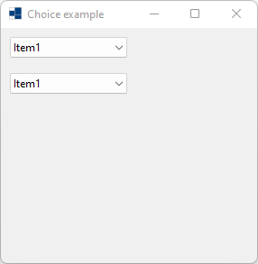
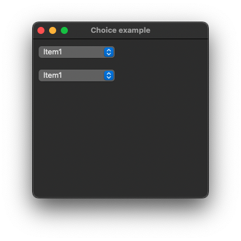

|
xtd
0.2.0
|
Loading...
Searching...
No Matches
choice.cpp
demonstrates the use of xtd::forms::choice control.
- Windows
- 
- macOS

- Gnome
#include <xtd/xtd>
namespace choice_example {
class form1 : public form {
public:
form1() {
text("Choice example");
choice1.parent(*this);
choice1.location({10, 10});
choice1.items().add_range({"Item1", "Item2", "Item3", "Item4", "Item5", "Item6", "Item7", "Item8", "Item9", "Item10"});
choice1.selected_index(0);
choice1.selected_index_changed += event_handler(*this, &form1::on_choice_click);
choice2.parent(*this);
choice2.location({10, 50});
choice2.items().add_range({"Item1", "Item2", "Item3", "Item4", "Item5", "Item6", "Item7", "Item8", "Item9", "Item10"});
choice2.selected_index(0);
choice2.selected_index_changed += event_handler(*this, &form1::on_choice_click);
}
private:
choice1.selected_index(as<choice&>(sender).selected_index());
choice2.selected_index(as<choice&>(sender).selected_index());
}
choice choice1;
choice choice2;
};
}
auto main() -> int {
application::run(choice_example::form1 {});
}
Represents the base class for classes that contain event data, and provides a value to use for events...
Definition event_args.hpp:18
Generated on Fri Oct 31 2025 16:35:32 for xtd by Gammasoft. All rights reserved.